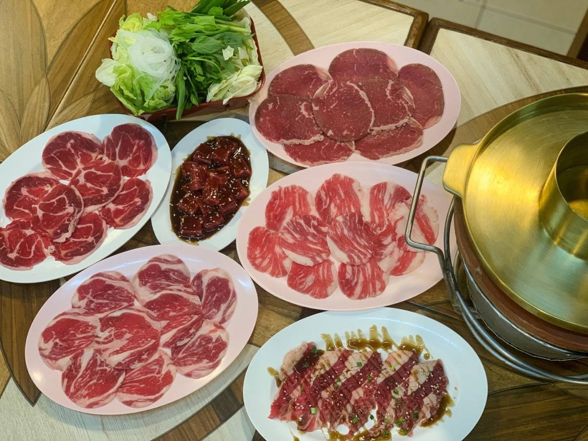
Charcoal grill ปิ้งย่างเตาถ่านกระทะทอง
- Kho khun beef sets ชุดเนื้อโคขุน
- Crying tiger เสือร้องไห้
- Grilled pork neck คอหมูย่าง
- Sliced beef & pork for the pan
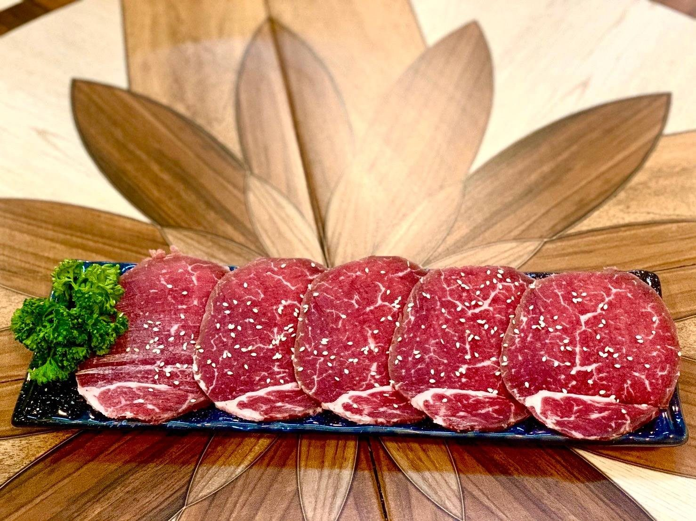
Isaan grill · Udon Thani
ร้านลาภแซ่บโคขุนโพนยางคำ
อาหารอีสาน และปิ้งย่างถ่านโคขุนกระทะทอง
Tender fattened beef grilled at your table over charcoal on the golden pan, bubbling jaew hon hot pot, fiery som tam and Isaan classics — every evening on Udon Dutsadi Road, until late.
About us · เกี่ยวกับร้าน
Lap Saep (ลาภแซ่บ) brings together two things Isaan does best: kho khun (โคขุน) — fattened, well-marbled beef — and bold, spicy, saep home cooking. Our name pays tribute to Phon Yang Kham (โพนยางคำ), the name behind some of Thailand's best-loved kho khun.
Grab a table, light the charcoal and grill beef and pork on the golden pan (ถ่านกระทะทอง), or simmer it in a clay pot of jaew hon (แจ่วฮ้อน). Add som tam, larb and sticky rice and you have a proper Isaan night out with family and friends.
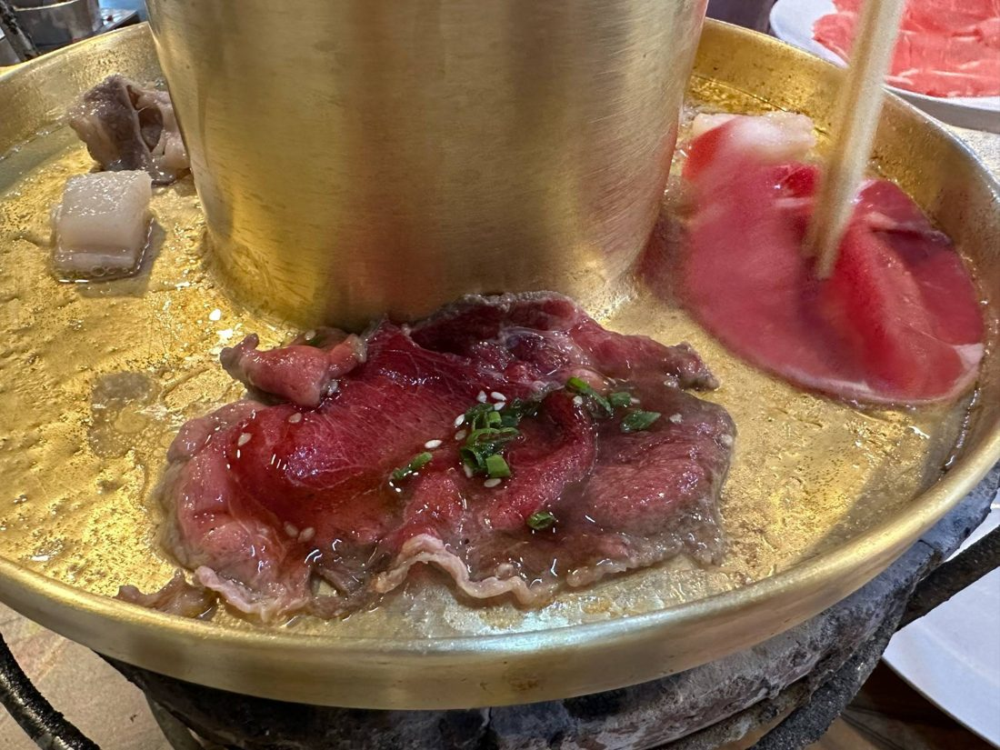
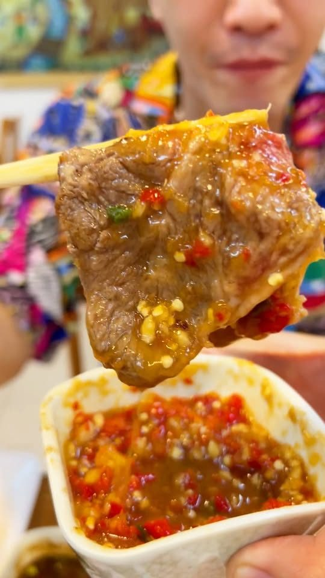
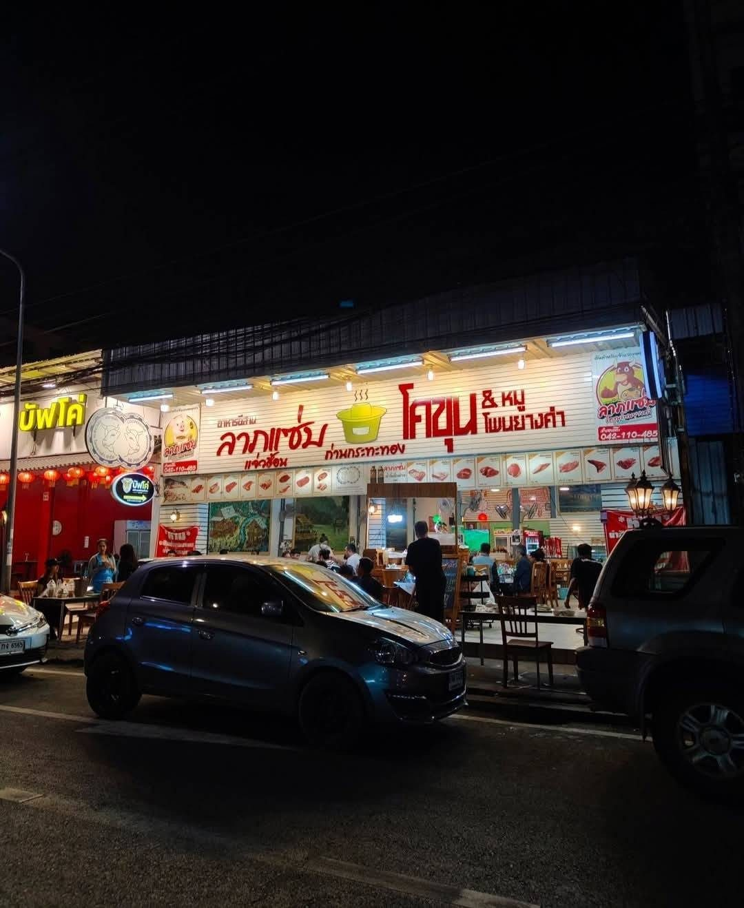
Open every evening
Look for the bright red-and-yellow sign — ลาภแซ่บ โคขุน & หมู โพนยางคำ — on Udon Dutsadi Road. Come early for dinner with the family, or late after a night out: the charcoal is still burning well past midnight.
Call to book a tableWhat guests say
“I love this place. Great everything… worth it if you want good meat.”Brian · Google review
“แจ่วฮ้อนของแท้ … ทำเนื้อได้ดีมาก ไม่เหนียว ไม่ผิดหวังทุกตัว”“Authentic jaew hon… the beef is excellent, never tough.”Wongnai review
“อาหารอร่อย รสชาติดี สดและสะอาด พนักงานบริการดีมากๆ”“Delicious, fresh and clean, and the staff are lovely.”Wongnai review
Gallery · รูปภาพ
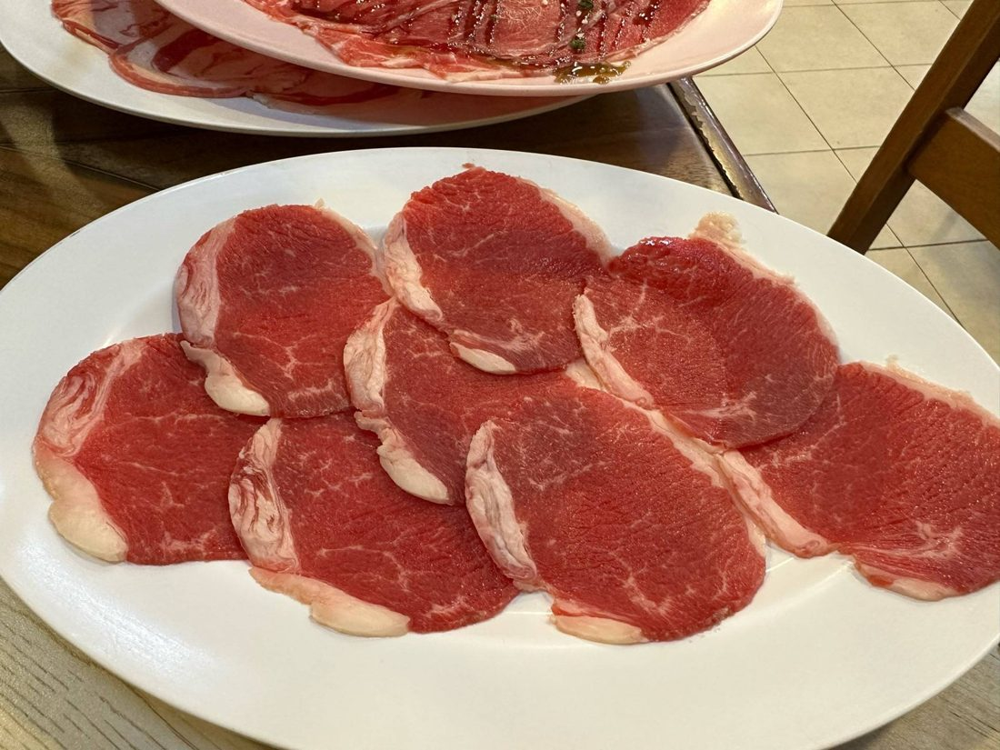
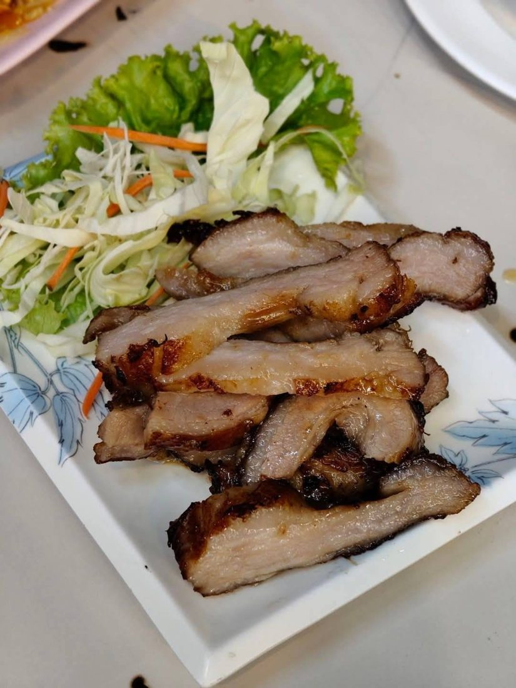
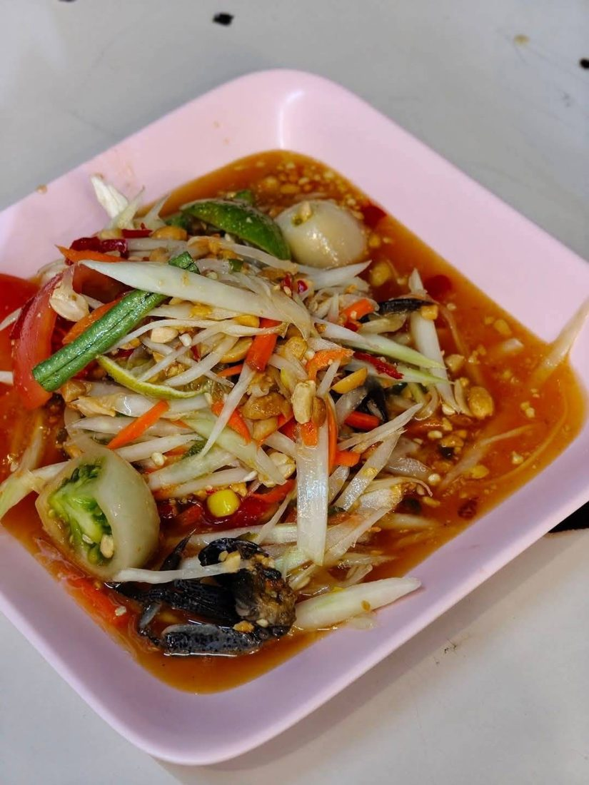
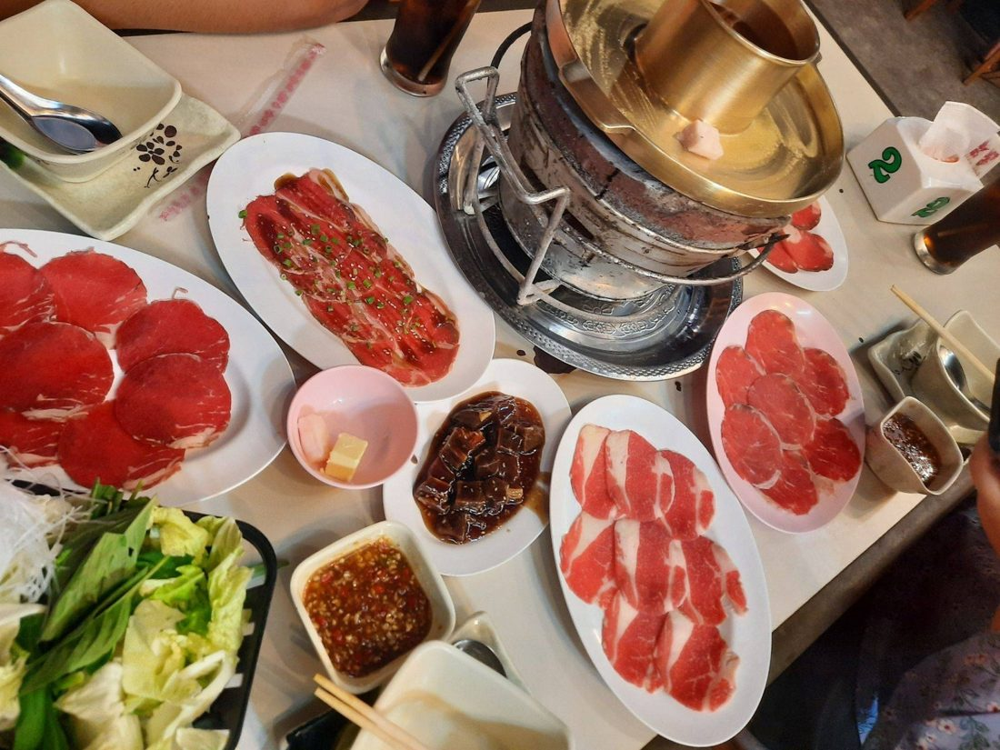
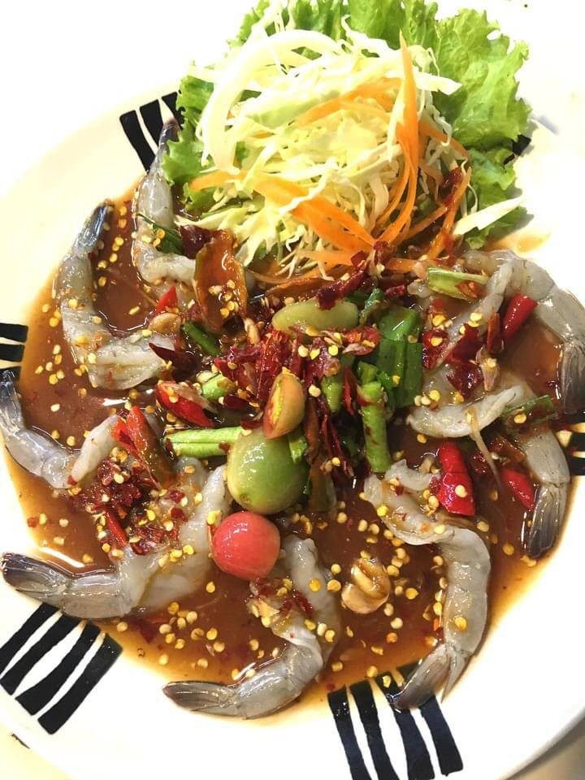
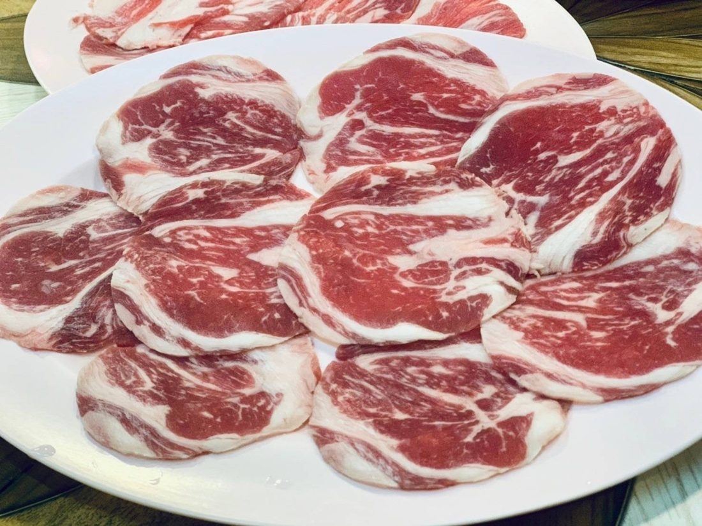
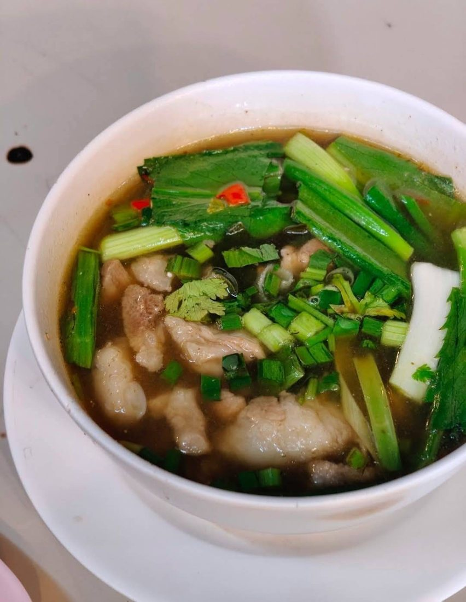
Hours & location · เวลาเปิด-ที่ตั้ง
Contact · ติดต่อเรา
Table bookings for groups, opening days and today's sets — we're happy to help.